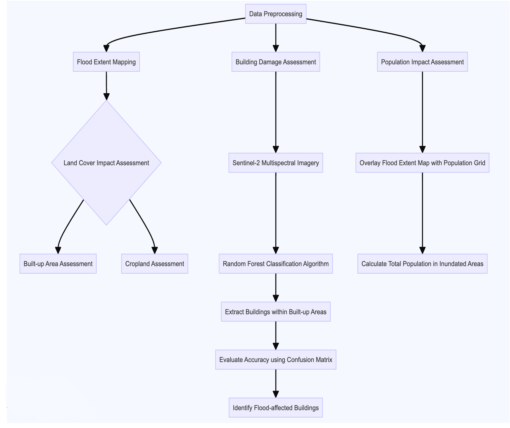
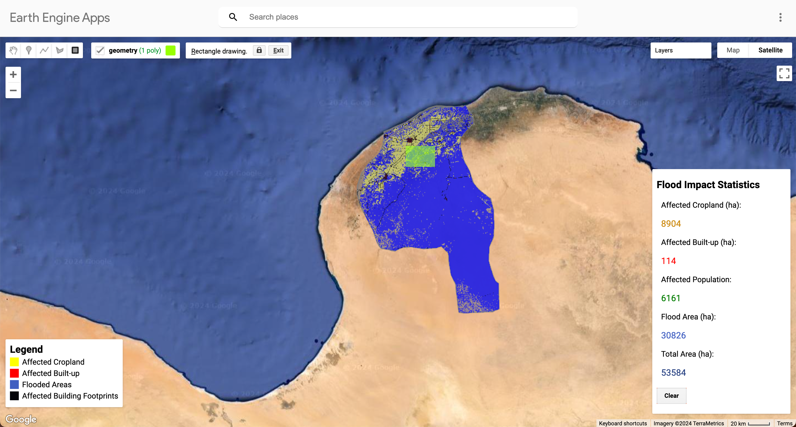
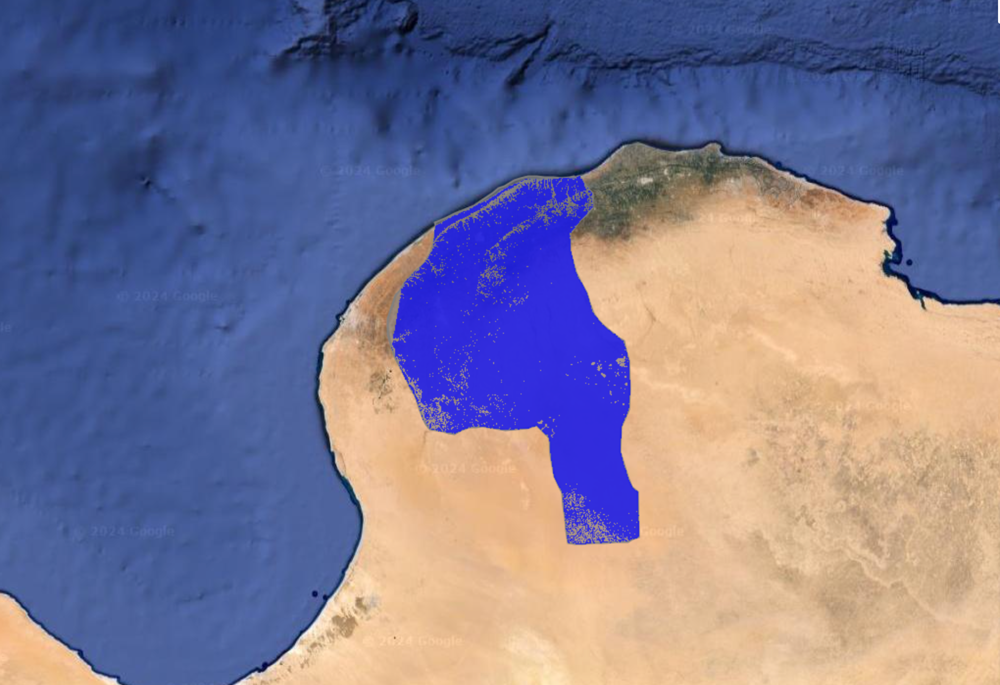
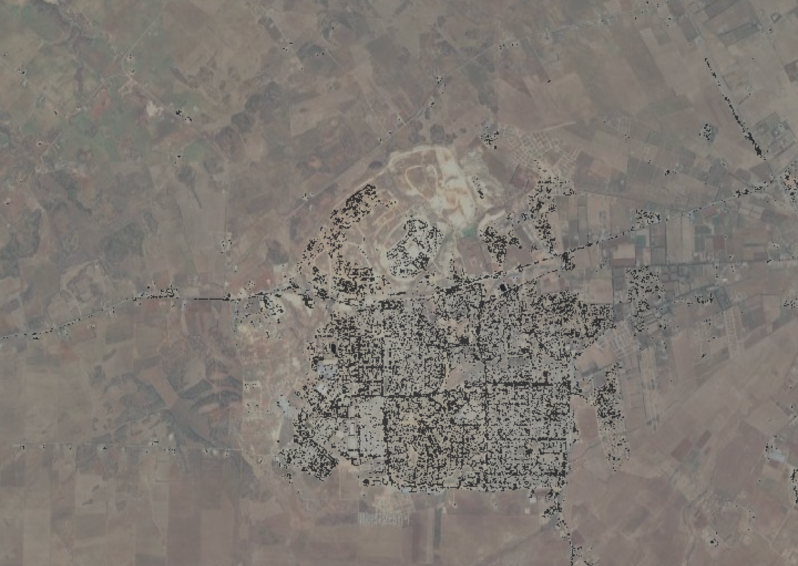

Al Marj Flood Impact Comprehensive Evaluation System
Project Summary
This project crafts an application within Google Earth Engine to evaluate the repercussions of the substantial flood event that transpired in Al Marj, Libya, during September 2023. The application integrates satellite imagery for flood mapping, land cover data for analyzing affected land cover types, and random forest classification to detect affected buildings. Additionally, it utilizes population grid data to estimate the number of people affected by the flood. The results provide a comprehensive assessment of the flood extent, affected land cover areas, impacted buildings, and the affected population, which is crucial for informing disaster response and management efforts.

Problem Statement
In September 2023, severe flooding in Al Marj, Libya, caused significant damage to infrastructure and displaced numerous people. Rapid and accurate assessment of the flood’s impact is essential for effective disaster response and management. This application aims to address the following key research questions:
What is the total area affected by the flooding?
What is the extent of damage affected by the flooding to different land cover types, particularly agricultural land and built-up areas? How the the flooding affact the area of Buildings?
How many people are estimated to be affected by the flooding?
End User
Government departments and international organizations:
By visualizing flooded areas, affected buildings, and population data, our project enables these departments to quickly and accurately assess the disaster situation. This facilitates effective rescue and reconstruction planning, as well as optimization of future urban development, land use, and drainage systems.
Affected communities and the public:
The spatial distribution map of the flooded area generated by the project can help the affected communities and the public intuitively understand the scope and severity of the flood impact, and take timely countermeasures.
Data
Sentinel-1 Satellite Image: Sentinel-1 collects C-band synthetic aperture radar (SAR) imagery at a variety of polarizations and resolutions. We use it to detect flood coverage.
Sentinel-2 Satellite Image: Sentinel-2 is a wide-swath, high-resolution, multispectral imaging mission with a global 5-day revisit frequency.
Surface Water:JRC Global Surface Water Metadata contains maps of the location and temporal distribution of surface water. Year-round water is filtered using the JRC Global Water Seasonal Data layer.
DEM:WWF HydroSHEDS Void-Filled DEM excludes areas with gradients greater than 5%.
Land Classification: ESA WorldCover 10m v200 ESA WorldCover10m contains 11 land cover classes based on Sentinel-1 and Sentinel-2 data.
Population: GHSL: Global population surfaces 1975-2030 contains the spatial distribution of residential population, expressed as the absolute number of inhabitants of the cell.
Methodology
Flood extent mapping:
The areas affected by the flood are identified by calculating the difference between pre-flood and post-flood images.
Land cover impact assessment: By overlaying the flood extent layer with the land cover, the affected built-up areas and croplands are assessed.
Building damage assessment:
The random forest classification algorithm is applied to the Sentinel-2 multispectral imagery to extract buildings within the built-up areas. The accuracy is evaluated using a confusion matrix.
Population impact assessment:
By overlaying the flood extent map with the population grid, the application calculates the total number of individuals residing within the inundated areas.

Interface
Users will be able to interact with the perform:
Draw an Area of Interest (AOI): Users can draw a polygon on the map to define a specific area they want to analyze.
Obtain information: The application will process the data within the AOI and display the key indicators in the results panel, including Total Area, Flood Extent Areas, Damaged Built-Up Areas, Damaged Cropland Areas, Estimated Affected Population.
Visualization: The map will display visual overlays within the AOI that include Affected Built-Up, Affected Cropland, A ffected Building Footprints, and Flood Areas. This setup clearly identifies flood-impacted regions.

The Application
This is our Earth Engine application.
How it Works
Analysis
1. Flood Area Analysis
1.1 Data Preprocessing
We imported the administrative boundary data of Al Marj region and filtered the area of interest (AOI).
// Import the administrative boundary of Libya and filter the target region (Al Marj) as the area of interest (AOI)
var admin = ee.FeatureCollection("projects/ee-hanmengyuan9/assets/libya");
var geometry = admin.filter(ee.Filter.eq('shapeName', 'Al Marj'));
Map.addLayer(geometry, {color: 'grey'}, 'Al Marj');And we selected the Sentinel-1 SAR image collection, set parameters and filter images for the flood periods.
// Define the time periods before and after the flood event
var before_start = '2023-09-01';
var before_end = '2023-09-15';
var after_start = '2023-09-23';
var after_end = '2023-09-30';
// Set sensor parameters for the satellite data collection
var polarization = ("VH", "VV");
var pass_direction = "DESCENDING";
var difference_threshold = 1.00;
// Defining the area of interest based on the filtered geometry
var aoi = geometry;
// Filtering the satellite image collection based on the specified parameters
var collection = ee.ImageCollection('COPERNICUS/S1_GRD')
.filter(ee.Filter.eq('instrumentMode', 'IW'))
.filter(ee.Filter.listContains('transmitterReceiverPolarisation', polarization))
.filter(ee.Filter.eq('orbitProperties_pass', pass_direction))
.filter(ee.Filter.eq('resolution_meters', 10))
.filterBounds(aoi)
.select(polarization);
// Filter the image collection to obtain images from before and after the flood
var before_collection = collection.filterDate(before_start, before_end);
var after_collection = collection.filterDate(after_start, after_end);Then, we mosaicked, clipped, and applied speckle noise reduction to the filtered before and after image collections to optimize data quality.
// Create a mosaic of selected tiles and clip to study area
var before = before_collection.mosaic().clip(aoi);
var after = after_collection.mosaic().clip(aoi);
// Apply reduce the radar speckle by smoothing
var smoothing_radius = 50;
var before_filtered = before.focal_mean(smoothing_radius, 'circle', 'meters');
var after_filtered = after.focal_mean(smoothing_radius, 'circle', 'meters');1.2 Flood Extent Extraction
We extracted the flood extent using threshold segmentation and further optimize the flood extent using surface water data, connectivity analysis, and terrain filtering.
// Calculate the difference between the before and after images
var difference = after_filtered.divide(before_filtered);
// Apply the predefined difference-threshold and create the flood extent mask
var threshold = difference_threshold;
var difference_binary = difference.gt(threshold);
// Refine flood result using additional datasets
// Include JRC layer on surface water seasonality to mask flood pixels from areas
// of "permanent" water (where there is water > 10 months of the year)
var swater = ee.Image('JRC/GSW1_0/GlobalSurfaceWater').select('seasonality');
var swater_mask = swater.gte(10).updateMask(swater.gte(10));
// Flooded layer where perennial water bodies (water > 10 mo/yr) is assigned a 0 value
var flooded_mask = difference_binary.where(swater_mask,0);
// final flooded area without pixels in perennial waterbodies
var flooded = flooded_mask.updateMask(flooded_mask);
// Compute connectivity of pixels to eliminate those connected to 8 or fewer neighbours
// This operation reduces noise of the flood extent product
var connections = flooded.connectedPixelCount();
var flooded = flooded.updateMask(connections.gte(8));
// Mask out areas with more than 5 percent slope using a Digital Elevation Model
var DEM = ee.Image('WWF/HydroSHEDS/03VFDEM');
var terrain = ee.Algorithms.Terrain(DEM);
var slope = terrain.select('slope');
var flooded = flooded.updateMask(slope.lt(5));1.3 Flood Area Calculation
We calculated the flood inundation area based on pixel area and regional statistics.
// Calculate flood extent area
// Create a raster layer containing the area information of each pixel
var flood_pixelarea = flooded.select(polarization)
.multiply(ee.Image.pixelArea());
// Sum the areas of flooded pixels
// default is set to 'bestEffort: true' in order to reduce computation time, for a more
// accurate result set bestEffort to false and increase 'maxPixels'.
var flood_stats = flood_pixelarea.reduceRegion({
reducer: ee.Reducer.sum(),
geometry: aoi,
scale: 10, // native resolution
//maxPixels: 1e9,
bestEffort: true
});
// Convert the flood extent to hectares (area calculations are originally given in meters)
var flood_area_ha = flood_stats
.getNumber(polarization)
.divide(10000)
.round();
2. Identify buildings affected by flooding
2.1 Data preprocessing
The obtained Sentinel-2 image is filtered, processed, cropped, and a preliminary image is generated. A mask is then applied to the data based on NDWI and NDVI thresholds (0.3 and 0.2, respectively) to filter out non-water and low vegetation cover areas.
// Define an array of band names for Sentinel-2 imagery
var bands = ['B2', 'B3', 'B4', 'B5', 'B6', 'B7', 'B8', 'B8A', 'B11', 'B12'];
// Create an ImageCollection of Sentinel-2 surface reflectance images
var sentinel2 = ee.ImageCollection('COPERNICUS/S2_SR')
.filter(ee.Filter.date(before_start, after_end)) // Filter images by date range
.filter(ee.Filter.lt('CLOUDY_PIXEL_PERCENTAGE', 10)) // Filter images with less than 10% cloud cover
.mean() // Compute the mean value of each pixel across the filtered images
.select(bands) // Select the specified bands
.clip(geometry); // Clip the resulting image to the specified geometry
// Define visualization parameters for RGB composite
var s_rgb = {
min: 0.0, // Minimum value for stretching the image
max: 3000, // Maximum value for stretching the image
bands: ['B4', 'B3', 'B2'], // Red, Green, Blue bands for the composite
opacity: 1 // Opacity of the layer
};
// Calculate NDVI (Normalized Difference Vegetation Index)
var ndvi = sentinel2.normalizedDifference(['B8', 'B4']).select(['nd'], ['ndvi']);
// Calculate NDWI (Normalized Difference Water Index)
var ndwi = sentinel2.normalizedDifference(['B3', 'B8']).select(['nd'], ['ndwi']);
// Create a masked image based on NDWI and NDVI thresholds and add NDVI band
var image = sentinel2
.updateMask(ndwi.lt(0.3)) // Mask pixels with NDWI less than 0.3
.updateMask(ndvi.lt(0.2)) // Mask pixels with NDVI less than 0.2
.addBands(ndvi); // Add the NDVI band to the image2.2 RF analysis
To improve the accuracy of the training building model, we will classify and identify different features (such as buildings, farmland, deserts, etc.) together by Random Forest.
var building_points = ee.FeatureCollection.randomPoints(buildings2, 3000).map(function(i) {
return i.set({'class': 0});
});
var farm_points = ee.FeatureCollection.randomPoints(farmland, 3000).map(function(i) {
return i.set({'class': 1});
});
var desert_points = ee.FeatureCollection.randomPoints(desert, 3000).map(function(i) {
return i.set({'class': 2});
});
var water_points = ee.FeatureCollection.randomPoints(water, 3000).map(function(i) {
return i.set({'class': 3});
});
var road_points = ee.FeatureCollection.randomPoints(road, 3000).map(function(i) {
return i.set({'class': 4});
});
var parking_points = ee.FeatureCollection.randomPoints(parking, 3000).map(function(i) {
return i.set({'class': 5});
});Combine the random points and split them into training and validation sets and we used the split ratio equal to 0.7.
// Combine the random points for each land cover class into a single FeatureCollection
var sample = ee.FeatureCollection([
building_points,
farm_points,
desert_points,
water_points,
road_points,
parking_points
])
.flatten() // Flatten the FeatureCollection
.randomColumn(); // Add a random column to the FeatureCollection for splitting
// Define the split ratio for training and validation samples
var split = 0.7;
// Create training sample by filtering the sample FeatureCollection where the random column is less than the split ratio
var training_sample = sample.filter(ee.Filter.lt('random', split));
// Create validation sample by filtering the sample FeatureCollection where the random column is greater than or equal to the split ratio
var validation_sample = sample.filter(ee.Filter.gte('random', split));Sample the image using the training and validation points and Train a Random Forest classifier using the training samples.
// Sample the image using the training sample
var training = image.sampleRegions({
collection: training_sample,
properties: ['class'],
scale: 10,
});
// Sample the image using the validation sample
var validation = image.sampleRegions({
collection: validation_sample,
properties: ['class'],
scale: 10
});
// Train a Random Forest classifier using the training samples
var model = ee.Classifier.smileRandomForest(400)
.train(training, 'class');Classify the image using the trained model and extract the building class from the prediction.
// Classify the image using the trained model
var prediction = image.classify(model);
// Extract the building class from the prediction by masking pixels that are not classified as buildings (class 0)
var building_prediction = prediction.updateMask(prediction.eq(0));3.Calculate the built-up areas, croplands, buildings footprint and population after the disaster
Import ESA WorldCover into the map and extract cropland and built-up land from it. By intersecting the Build-up land with the identified buildings, we will focus on the disaster situation of the buildings in the built-up area. Finally, the flood data mask was used to obtain the cropland, built-up areas, building spatial distribution and population after the disaster.
// Use the ESA WorldCover 10m v200 dataset
var dataset = ee.ImageCollection('ESA/WorldCover/v200')
.first() // Take the first Image
.select('Map') // Select the 'Map' band
.clip(aoi);
// Get the projection information of ESA WorldCover
var worldCoverProjection = dataset.projection();
// Reproject the flood layer to the scale of ESA WorldCover
var flooded_res = flooded.reproject({
crs: worldCoverProjection
});
// Add the ESA WorldCover layer to the map
var worldCoverVis = {
min: 10,
max: 100,
palette: [
'#006400', '#ffbb22', '#ffff4c', '#f096ff', '#fa0000',
'#b4b4b4', '#f0f0f0', '#0064c8', '#0096a0', '#00cf75',
'#fae6a0'
]
};
Map.addLayer(dataset, worldCoverVis, 'ESA WorldCover');
// Select cropland category (class code 40 corresponds to cropland)
var cropland = dataset.eq(40);
// Calculate affected cropland area
var croplandAffected = flooded_res.updateMask(cropland);
// Select built-up category (class code 50)
var buildland = dataset.eq(50);
var class_prediction = prediction.updateMask(prediction.eq(0));
// ---------- Construct Building Spatial Distribution -----------
// Mask classification results using built-up area masks after resampling
var maskedClassPrediction = prediction.updateMask(builtUp);
// Convert masked classification results to 1-bit depth black and white images
var maskedClassPredictionBinary = maskedClassPrediction.multiply(255).toByte();
// Add converted classification results to the map
Map.addLayer(maskedClassPredictionBinary, {min: 0, max: 1}, 'Built-up Area Prediction (Binary)');
// ---------- Load population data -----------
// Load population data from GHSL
var population = ee.Image('JRC/GHSL/P2023A/GHS_POP/2020')
.clip(aoi);
// Get GHSL projection
var GHSLprojection = population.projection();
// Reproject flood layer to GHSL scale
var flooded_res1 = flooded.reproject({
crs: GHSLprojection
});
// Calculate flood-affected population by applying the flood and population masks
var floodedPopulation = population
.updateMask(flooded_res1)
.updateMask(population);Construct the function about calculating the area of affected croplands, built-up areas and population.
function calculateFloodImpactStats(Affected_Cropland, Affected_Builtup, Flooded_Population, Flooded_Areas, polarization, aoi) {
// Calculate the area of each affected cropland pixel
var affectedCroplandArea = Affected_Cropland.multiply(ee.Image.pixelArea());
// Calculate the sum of the affected cropland area
var croplandStats = affectedCroplandArea.reduceRegion({
reducer: ee.Reducer.sum(),
geometry: aoi,
scale: 10, // Use the original resolution of the WorldCover dataset (10m)
maxPixels: 1e9
});
// Convert the affected cropland area from square meters to hectares
var croplandAreaHectares = ee.Number(croplandStats.get('b1')).divide(10000).round();
// Calculate the area of each affected built-up land pixel
var affectedBuildlandArea = Affected_Builtup.multiply(ee.Image.pixelArea());
// Calculate the sum of the affected built-up land area
var buildlandStats = affectedBuildlandArea.reduceRegion({
reducer: ee.Reducer.sum(),
geometry: aoi,
scale: 10, // Use the original resolution of the WorldCover dataset (10m)
maxPixels: 1e9
});
// Convert the affected built-up land area from square meters to hectares
var buildlandAreaHectares = ee.Number(buildlandStats.get('b1')).divide(10000).round();
// Calculate the number of affected population
var populationStats = Flooded_Population.reduceRegion({
reducer: ee.Reducer.sum(),
geometry: aoi,
scale: 100,
maxPixels: 1e9
});
// Get the affected population count
var affectedPopulation = ee.Number(populationStats.get('b1')).round();
// Calculate the area of the flooded regions
var flood_pixelarea = Flooded_Areas.multiply(ee.Image.pixelArea());
// Calculate the sum of the flooded area
var flood_stats = flood_pixelarea.reduceRegion({
reducer: ee.Reducer.sum(),
geometry: aoi,
scale: 10,
bestEffort: true
});
// Convert the flooded area from square meters to hectares
var flood_area_ha = ee.Number(flood_stats.get('b1')).divide(10000).round();
// Calculate the total area of the selected region
var totalArea = ee.Image.pixelArea().reduceRegion({
reducer: ee.Reducer.sum(),
geometry: aoi,
scale: 10,
maxPixels: 1e13
});
// Convert the total area from square meters to hectares
var totalAreaHectares = ee.Number(totalArea.get('area')).divide(10000).round();
// Return an object containing all the calculated results
return {
croplandAreaHectares: croplandAreaHectares,
buildlandAreaHectares: buildlandAreaHectares,
affectedPopulation: affectedPopulation,
floodAreaHectares: flood_area_ha,
totalAreaHectares: totalAreaHectares
};
}Affected Build-up Areas 
Affected Cropland Areas 
Affected Building Distribution of One City 
User Interface
- Create a map instance and Set the center point and zoom level of the map. Focus on the country that needs to be analysed.
Map.setCenter(21.0842, 31.9395, 10);
var admin = ee.FeatureCollection("projects/ee-hanmengyuan9/assets/libya");
var geometry=admin.filter(ee.Filter.eq('shapeName','Al Marj'));
// Add the filtered feature collection to the map
Map.addLayer(geometry,{color:'grey'},'Al Marj');
// Add Google Satellite imagery to the map
Map.setOptions('SATELLITE');
// Set the map center to the area of interest
Map.centerObject(geometry, 8);- User interface layout
The UI design is structured to facilitate the interpretation and analysis of data regarding flooded regions. The layout can be divided into distinct zones: the map visualization area, area selection and the statistical information panel.
The map visualization provides a geographical representation of the affected areas, employing a color-coded legend for immediate visual differentiation between various categories such as ‘Affected Cropland’, ‘Affected Built-up’, ‘Flooded Areas’, and ‘Affected Building Footprints’. The choice of contrasting colors enhances the readability of the data on a spatial scale.
// Load the products we generated
var Affected_Builtup = ee.Image('projects/ee-zhengying11140/assets/Affected_Builtup');
var Flooded_Population = ee.Image('projects/ee-zhengying11140/assets/Flooded_Population');
var Flooded_Areas = ee.Image('projects/ee-zhengying11140/assets/Flooded_Areas');
var Classification_Result = ee.Image('projects/ee-zhengying11140/assets/Classification_Result');
var Affected_Cropland = ee.Image('projects/ee-zhengying11140/assets/Affected_Cropland');
var BuildingFootprints = ee.Image('projects/ee-zhengying11140/assets/MaskedClassPrediction');
// Set raster pixels with no value to transparent
var Flooded_Areas_Unmasked = Flooded_Areas.unmask(0).selfMask();
var Affected_Cropland_Unmasked = Affected_Cropland.unmask(0).selfMask();
var Affected_Builtup_Unmasked = Affected_Builtup.unmask(0).selfMask();
var BuildingFootprints_Unmasked = BuildingFootprints.unmask(0).selfMask();
// Define visualisation parameters for flooded areas and affected cropland
// affected built-up land and affected building footprints
var floodedAreasVis = {
palette: ['blue'],
opacity: 0.7
};
var affectedCroplandVis = {
palette: ['yellow'],
opacity: 0.7
};
var affectedBuiltuplandVis = {
palette: ['red'],
opacity: 0.7
};
var affectedBuildingFootprintsVis = {
palette: ['#050509'],
opacity: 0.7
};
// Add layers accordingly
Map.addLayer(Flooded_Areas_Unmasked, floodedAreasVis, 'Flooded Areas');
Map.addLayer(Affected_Cropland_Unmasked, affectedCroplandVis, 'Affected Cropland');
Map.addLayer(Affected_Builtup_Unmasked, affectedBuiltuplandVis, 'Affected Built-up');
Map.addLayer(BuildingFootprints_Unmasked, affectedBuildingFootprintsVis, 'Affected Building Footprints');On the top-left of the UI is a tool bar which enables the user to freely select the area they wish to analyse.
// Create a drawing tool
var drawingTools = Map.drawingTools();
drawingTools.setShown(true);On the right side of the map is the statistical information panel, which presents crucial data in a concise, tabulated format. This includes metrics such as affected cropland area (in hectares), affected built-up area, affected population, total flood area, and the total area under consideration. The numerical data is clearly delineated which directly answer the questions examined in this project. If the user want to choose another area, he can click the “clear” button on the bottom of the panel and repeat the process of selecting.
// Create a panel to display the statistics and clear button
var panel = ui.Panel({
style: {
position: 'bottom-right',
width: '250px',
padding: '8px',
backgroundColor: 'white',
fontFamily: 'Arial',
fontSize: '14px'
}
});
// Create a title label
var titleLabel = ui.Label({
value: 'Flood Impact Statistics',
style: {fontWeight: 'bold', fontSize: '18px', margin: '10px 0'}
});
// Create labels to display the statistics
var croplandLabel = ui.Label({style: {color: '#CD8B0E', fontSize: '16px'}});
var buildlandLabel = ui.Label({style: {color: 'red', fontSize: '16px'}});
var populationLabel = ui.Label({style: {color: 'green', fontSize: '16px'}});
var floodAreaLabel = ui.Label({style: {color: '#415FC1', fontSize: '16px'}});
var totalAreaLabel = ui.Label({style: {color: '#243F81', fontSize: '16px'}});
// Create a clear button
var clearButton = ui.Button({
label: 'Clear',
style: {backgroundColor: '#FF5722', color: 'black', fontSize: '14px', margin: '10px 0'},
onClick: function() {
drawingTools.layers().reset();
croplandLabel.setValue('');
buildlandLabel.setValue('');
populationLabel.setValue('');
floodAreaLabel.setValue('');
totalAreaLabel.setValue('');
}
});
// Add the labels and clear button to the panel
panel.add(titleLabel);
panel.add(ui.Label('Affected Cropland (ha):'));
panel.add(croplandLabel);
panel.add(ui.Label('Affected Built-up (ha):'));
panel.add(buildlandLabel);
panel.add(ui.Label('Affected Population:'));
panel.add(populationLabel);
panel.add(ui.Label('Flood Area (ha):'));
panel.add(floodAreaLabel);
panel.add(ui.Label('Total Area (ha):'));
panel.add(totalAreaLabel);
panel.add(clearButton);On the left-bottom is a panel of lengend, which represents different color of the land use.
// Create a legend panel
var legend = ui.Panel({
style: {
position: 'bottom-left',
padding: '8px'
}
});
// Create a legend title
var legendTitle = ui.Label({
value: 'Legend',
style: {fontWeight: 'bold', fontSize: '18px', margin: '0 0 4px 0'}
});
legend.add(legendTitle);
// Create a legend row
var makeRow = function(color, name) {
var colorBox = ui.Label({
style: {
backgroundColor: color,
padding: '8px',
margin: '0 0 4px 0'
}
});
var description = ui.Label({
value: name,
style: {margin: '0 0 4px 6px'}
});
return ui.Panel({
widgets: [colorBox, description],
layout: ui.Panel.Layout.Flow('horizontal')
});
};
// Add legend items
legend.add(makeRow('yellow', 'Affected Cropland'));
legend.add(makeRow('red', 'Affected Built-up'));
legend.add(makeRow('#415FC1', 'Flooded Areas'));
legend.add(makeRow('#050509', 'Affected Building Footprints'));
// Add the legend to the map
Map.add(legend);- Data transmission
The code loads a series of pre-generated raster images representing different aspects of the flood impact such as ‘Affected Builtup’, ‘Flooded Population’, etc. These rasters are processed to set non-valued pixels to transparent, which would allow for overlaying them on the map without obscuring other layers.
// Load the products we generated
var Affected_Builtup = ee.Image('projects/ee-zhengying11140/assets/Affected_Builtup');
var Flooded_Population = ee.Image('projects/ee-zhengying11140/assets/Flooded_Population');
var Flooded_Areas = ee.Image('projects/ee-zhengying11140/assets/Flooded_Areas');
var Classification_Result = ee.Image('projects/ee-zhengying11140/assets/Classification_Result');
var Affected_Cropland = ee.Image('projects/ee-zhengying11140/assets/Affected_Cropland');
var BuildingFootprints = ee.Image('projects/ee-zhengying11140/assets/MaskedClassPrediction');When the user selects an area on the map, the onDraw event triggers data capture. Then, a variable aoi is returned, which represents geometry, and this variable is brought into the function calculateFloodImpactStats for calculation. The equations are encapsulated to calculate the full range of values required. When the user needs to calculate new data, just refresh the value of aoi, which is very efficient.
// Listen for the draw end event
drawingTools.onDraw(function(geometry) {
// Get the drawn geometry
var aoi = geometry;
// Display a calculating message
croplandLabel.setValue('Calculating...');
buildlandLabel.setValue('Calculating...');
populationLabel.setValue('Calculating...');
floodAreaLabel.setValue('Calculating...');
totalAreaLabel.setValue('Calculating...');
// Call the calculation function and update the labels
var stats = calculateFloodImpactStats(Affected_Cropland, Affected_Builtup, Flooded_Population, Flooded_Areas, BuildingFootprints, 'VV', aoi);A function calculateFloodImpactStats is defined to compute statistics such as the area of affected cropland and built-up land in hectares, the number of affected population, and the area of flooded regions, based on the pixel values of the respective images within the selected AOI. The calculations use GEE’s reduction methods over the specified region at a defined scale.
function calculateFloodImpactStats(Affected_Cropland, Affected_Builtup, Flooded_Population, Flooded_Areas, BuildingFootprints, polarization, aoi) {
// Calculate the area of each affected cropland pixel
var affectedCroplandArea = Affected_Cropland.multiply(ee.Image.pixelArea());
// Calculate the sum of the affected cropland area
var croplandStats = affectedCroplandArea.reduceRegion({
reducer: ee.Reducer.sum(),
geometry: aoi,
scale: 10,
maxPixels: 1e9
});
var croplandAreaHectares = ee.Number(croplandStats.get('b1')).divide(10000).round();
// Calculate the area of each affected built-up land pixel
var affectedBuildlandArea = Affected_Builtup.multiply(ee.Image.pixelArea());
// Calculate the sum of the affected built-up land area
var buildlandStats = affectedBuildlandArea.reduceRegion({
reducer: ee.Reducer.sum(),
geometry: aoi,
scale: 10,
maxPixels: 1e9
});
var buildlandAreaHectares = ee.Number(buildlandStats.get('b1')).divide(10000).round();
// Calculate the number of affected population
var populationStats = Flooded_Population.reduceRegion({
reducer: ee.Reducer.sum(),
geometry: aoi,
scale: 100,
maxPixels: 1e9
});
var affectedPopulation = ee.Number(populationStats.get('b1')).round();
// Calculate the area of flooded regions
var flood_pixelarea = Flooded_Areas.multiply(ee.Image.pixelArea());
var flood_stats = flood_pixelarea.reduceRegion({
reducer: ee.Reducer.sum(),
geometry: aoi,
scale: 10,
bestEffort: true
});
var flood_area_ha = ee.Number(flood_stats.get('b1')).divide(10000).round();
// Calculate the total area of the selected AOI
var totalArea = ee.Image.pixelArea().reduceRegion({
reducer: ee.Reducer.sum(),
geometry: aoi,
scale: 10,
maxPixels: 1e13
});
var totalAreaHectares = ee.Number(totalArea.get('area')).divide(10000).round();
// Return an object containing all the calculated results
return {
croplandAreaHectares: croplandAreaHectares,
buildlandAreaHectares: buildlandAreaHectares,
affectedPopulation: affectedPopulation,
floodAreaHectares: flood_area_ha,
totalAreaHectares: totalAreaHectares
};
}